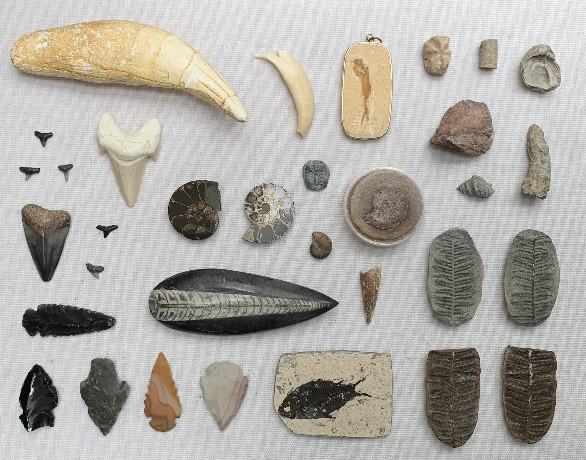

Fossils Etc.

Cave Bear Canine
- A prehistoric species of bear that lived in Europe and Asia during the Pleistocene and became extinct about 24,000 years ago during the Last Glacial Maximum.
- Pleistocene (300,000 to 15,000 BC)
Otodus Shark Tooth
- Otodus is an extinct, cosmopolitan genus of mackerel shark. The name Otodus comes from Ancient Greek, "ear-shaped tooth".
- Paleocene to Pliocene (65 to 3.6 Ma)
Great White Shark Tooth
- A species of large mackerel shark which can be found in the coastal surface waters of all the major oceans. It is the only known surviving species of its genus Carcharodon. Found by me in Naples
- Miocene–Present